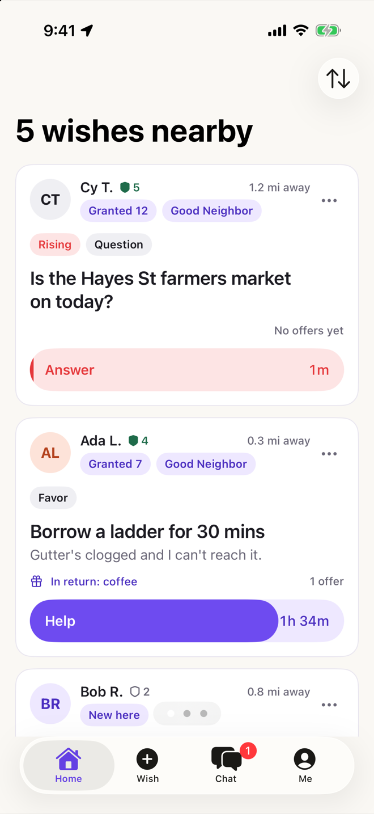
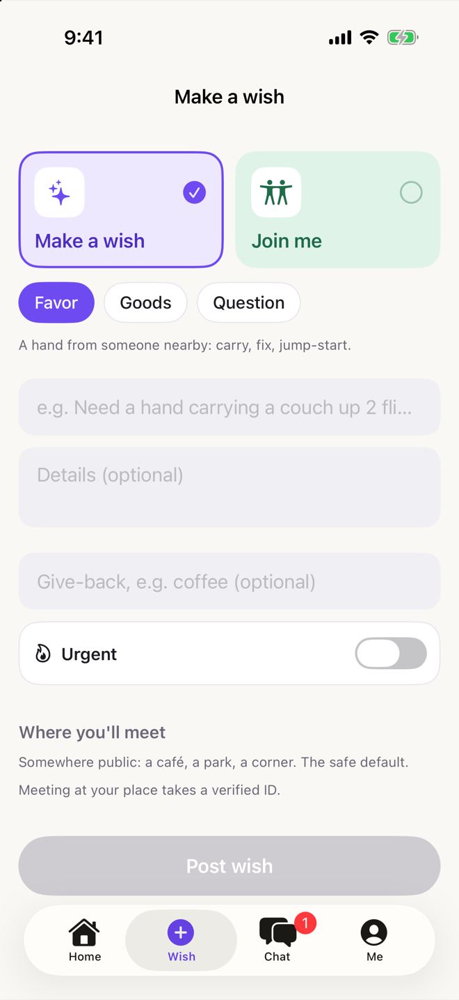
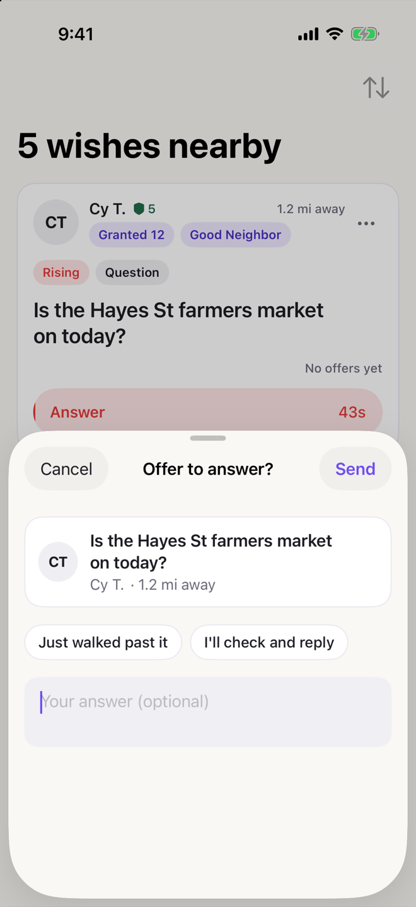
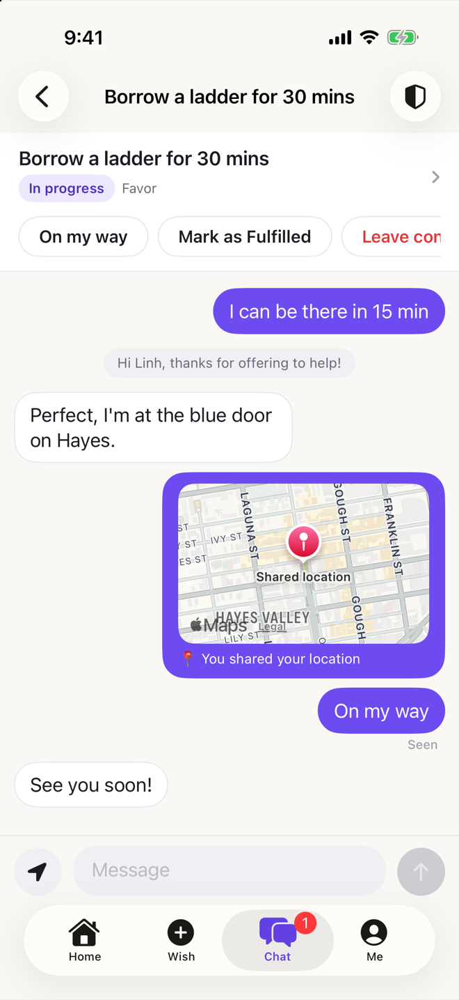
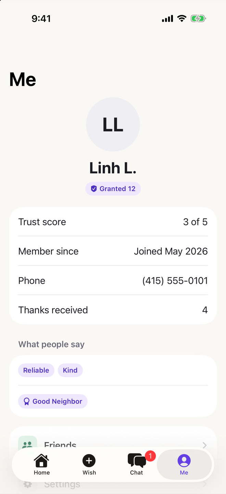
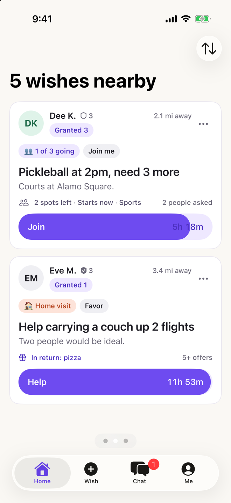
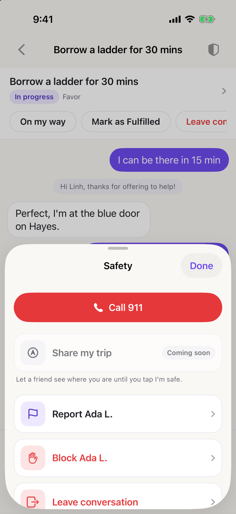
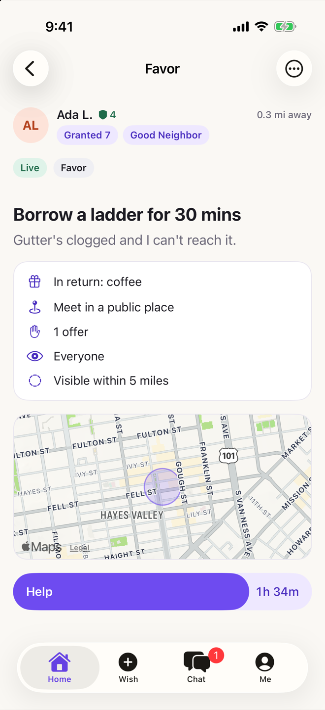
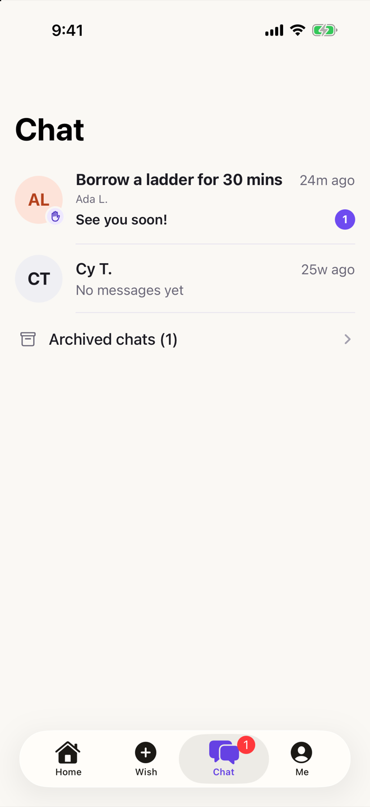

Make a wish anywhere you go. Someone nearby can help. Help others and meet people along the way.
Free. No ads, and no money between neighbors.

Why jyn
How it works

Say what you need: a favor, something to borrow, or a question. Add a thank-you if you like and choose how long it stays up, from 30 minutes to a day.
It runs out on its own. If nobody takes it on, repost it and it reaches a little further.

People nearby see your wish and offer to help with a tap and a short note. Only you see who offered, and you pick who helps.

Picking someone opens a chat with them. Share where exactly to meet only there: everyone else only ever sees your wish's spot to about 100 metres.

You say when it's done. Then thank each other with kudos and a note that stays on your profiles, and a badge that grows with every wish you grant.
Join me
Start a run, a game night or a meal and let people nearby come along.

Safety
jyn is about people you don't know yet, so the safe choice is the default.

A look inside

